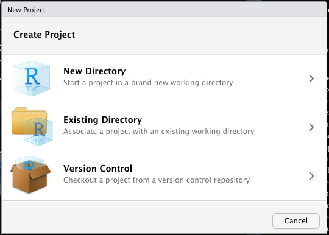
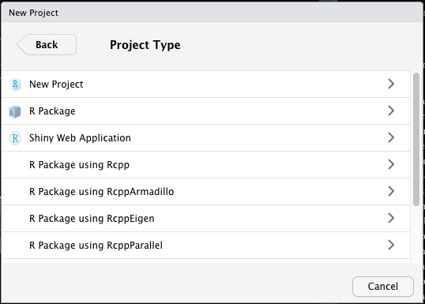
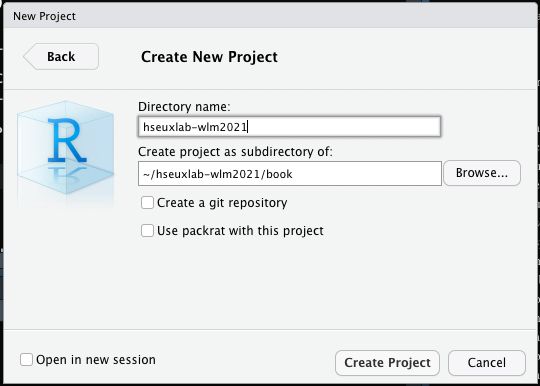

6 Работа с реальными данными
Итак, мы приступаем к самому интересному и самому важному разделу первого блока! Мы будем тренироваться на данных о фильма и сериалах Netflix.
6.1 Рабочая директория
Раз мы хотим работать в данными, надо их откуда-то взять. Скачайте датасет по этой ссылке.
Датасетом мы будем называть любой набор данных, который у нас есть.
Мы уже говорили о рабочей директории и проектах в самом начале курса. Немного вспомним эту тему. Мы накапливаем много различных файлов (скрипты, файлы сырых данных данных, файлы предобработанны данных, файл объектов из рабочего пространства, графики, результаты анализа…) в процессе анализа данных, и это необходимо каким-то образом систематизировать.
Есть рабочая директория — это папка, в которую смотрит R во время работы. Что это за папка можно узнать через команду:
## [1] "/Users/antonangelgardt/hseuxlab-wlm2021/book/wlm2021-book"У меня он смотрел вот в эту папку, у вас, скорее всего, будет что-то типа C://users/имя_пользователя или /Users/имя_пользователя, что указывает на папку пользователя по умолчанию.
Можно установить другую рабочую директорию с помощью команды setwd():
Теперь он будет смотреть в папку R, которая лежит в дефолтной папке пользователя. Такой способ достаточно удобен, однако можно сделать ещё лучше — создать проект (Project).
Кто-то любит работать в проектах, кто-то нет — дело вкуса. Мне это нравится, даже если вам не понравится. Простите, если мы вдруг не сойдёмся во вкусах, но, повторюсь, это нравится мне, сугубо, лично… Поэтому я буду про это рассказывать и рекламировать.
Зайдите в File → New Project…. У вас откроется такое окно:

Выберите New Directory, затем еще раз New Project:

Откроется вот это:

В Directory name указываем название нашей папки, во втором поле указываем путь к той папке, в которой будет лежать создаваемая папка. Нажимаем Create Project, после чего R перезапускает сессию, и открывается привычное окно. Однако в верхнем правом углу R теперь указано название проекта, в котором мы работаем.
Если вы уже это сделали в начале курса, то пропустите это задание.

Создайте проект для нашего курса.
- Откройте
File → New Project… - Выберите
New Directory → New Project - Назовите новую директорию
hseuxlab-wlm2021 - Задайте расположение внутри папки пользователя системы
- Создайте новый скрипт и скопируйте туда следующий код:
print("Hello, World of Linear Models!")- Сохраните скрипт нажатием
Ctrl+S(Cmd+S)
Теперь при работе в рамках курса мы будем запускать проект и работать в нём, чтобы ничего не запуталось.
Много ли это приносит профита? Ну, не так уж и много… По сути, что открыть проект, что выполнить setwd("пусть_к_папке") — примерно одно и то же. Вот только строку кода можно забыть запустить после открытия скрипта, а если мы запустили проект, мы уверены, что у нас все автоматически настроилось и ошибок не будет.
Если вы уже это сделали в начале курса, то пропустите это задание.
Откройте директорию (папку) проекта курса и создайте в ней несколько папок. Они нам понадобятся для структурирования нашего пространства в процессе курса, потому что файлов будет много. Кроме того, будем постепенно привыкать к тому, чтобы наше рабочее пространство было чистым и опрятным.
Нам понадобятся следующие папки:
scriptsдля хранения скриптовых файловdataдля хранения файлов данныхfigures, чтобы выгружать графики
Потом мы сможем дополнить их другими папками, если нам таковые понадобятся, а также создать более мелкие подразделы внутри созданных папок.
Дальнейший разговор будет вестись с учетом того, что вы работаете в созданном проекте или задали рабочую директорию через
setwd(), а также у вас созданы папкиscripts,dataиfiguresвнутри папки нашего курса.
6.2 Импорт данных
Окей, файл с данными у нас есть. Теперь наша задача его как-то загрузить в R, чтобы мы могли с ним работать. Вариантов существует несколько. Разберём сначала следующий.
- переложите скачанный файл из «Загрузок» в папку
data - обратите внимание на расширение этого файла:
netflix_title.csv
Такие файлы можно прочитать с помощью функции read.csv(). В аргументах это функции надо указать файл, который надо прочитать (а также путь к нему, начиная с подпапки рабочей директории). То есть:
Почему так? Так как мы установили рабочую директорию (или запустили проект), то R по умолчанию теперь смотрит в папку нашего курса. А вот далее его надо сориентировать — поэтому мы пишем data/netflix_titles.csv. То есть говорим ему: «иди дальше в папку data и принеси мне файл netflix_titles.csv. Собственно, он нам его и принёс.
Можно это проверить:
## show_id type title director
## 1 s1 TV Show 3%
## 2 s2 Movie 7:19 Jorge Michel Grau
## 3 s3 Movie 23:59 Gilbert Chan
## 4 s4 Movie 9 Shane Acker
## 5 s5 Movie 21 Robert Luketic
## 6 s6 TV Show 46 Serdar Akar
## cast
## 1 João Miguel, Bianca Comparato, Michel Gomes, Rodolfo Valente, Vaneza Oliveira, Rafael Lozano, Viviane Porto, Mel Fronckowiak, Sergio Mamberti, Zezé Motta, Celso Frateschi
## 2 Demián Bichir, Héctor Bonilla, Oscar Serrano, Azalia Ortiz, Octavio Michel, Carmen Beato
## 3 Tedd Chan, Stella Chung, Henley Hii, Lawrence Koh, Tommy Kuan, Josh Lai, Mark Lee, Susan Leong, Benjamin Lim
## 4 Elijah Wood, John C. Reilly, Jennifer Connelly, Christopher Plummer, Crispin Glover, Martin Landau, Fred Tatasciore, Alan Oppenheimer, Tom Kane
## 5 Jim Sturgess, Kevin Spacey, Kate Bosworth, Aaron Yoo, Liza Lapira, Jacob Pitts, Laurence Fishburne, Jack McGee, Josh Gad, Sam Golzari, Helen Carey, Jack Gilpin
## 6 Erdal Beşikçioğlu, Yasemin Allen, Melis Birkan, Saygın Soysal, Berkan Şal, Metin Belgin, Ayça Eren, Selin Uludoğan, Özay Fecht, Suna Yıldızoğlu
## country date_added release_year rating duration
## 1 Brazil August 14, 2020 2020 TV-MA 4 Seasons
## 2 Mexico December 23, 2016 2016 TV-MA 93 min
## 3 Singapore December 20, 2018 2011 R 78 min
## 4 United States November 16, 2017 2009 PG-13 80 min
## 5 United States January 1, 2020 2008 PG-13 123 min
## 6 Turkey July 1, 2017 2016 TV-MA 1 Season
## listed_in
## 1 International TV Shows, TV Dramas, TV Sci-Fi & Fantasy
## 2 Dramas, International Movies
## 3 Horror Movies, International Movies
## 4 Action & Adventure, Independent Movies, Sci-Fi & Fantasy
## 5 Dramas
## 6 International TV Shows, TV Dramas, TV Mysteries
## description
## 1 In a future where the elite inhabit an island paradise far from the crowded slums, you get one chance to join the 3% saved from squalor.
## 2 After a devastating earthquake hits Mexico City, trapped survivors from all walks of life wait to be rescued while trying desperately to stay alive.
## 3 When an army recruit is found dead, his fellow soldiers are forced to confront a terrifying secret that's haunting their jungle island training camp.
## 4 In a postapocalyptic world, rag-doll robots hide in fear from dangerous machines out to exterminate them, until a brave newcomer joins the group.
## 5 A brilliant group of students become card-counting experts with the intent of swindling millions out of Las Vegas casinos by playing blackjack.
## 6 A genetics professor experiments with a treatment for his comatose sister that blends medical and shamanic cures, but unlocks a shocking side effect.Что-то загрузилось. Это хорошо. Что именно — выясним чуть позже.
Можно ли не прописывать data? Можно, но тогда придётся переложить файл данных в рабочую директорию (то есть папку курса). С одним файлом ничего, можно жить. А есть у вас 30 или 50 файлов разных респондентов? Уже тяжеловато и бардак. Поэтому, на мой взгляд, такая организация — хороший компромисс: кода пишем чуть-чуть больше, но зато есть порядок1.
Конечно, можно хранить файлы данных где-то совсем отдельно. Но тогда и прописывать придётся путь от конревой папки компа:
# например, можно прочитать файл прямо из папки «Загрузки»
netflix <- read.csv('/Users/antonangelgardt/Downloads/netflix_titles.csv')Это выглядит не очень удобно.
На самом деле, в мире облачных технологий можно и вовсе обойтись без скачивания файлов на десктоп. Функция read.csv() вполне может прочитать файл прямо из интернета:
# это ссылка на мой GitHub, где лежит нужный нам файл
netflix <- read.csv('https://raw.githubusercontent.com/angelgardt/hseuxlab-wlm2021/master/data/netflix_titles.csv')Однако стоит помнить, что наши собранные руками данные в облаках, скорее всего, не лежат. Поэтому надо уметь загрузить файл и из интернета, и с компа.
6.2.1 Форматы данных
Мы тактично соскользнули с момента расширения файла. Напомню, что у нас файл netflix_titles.csv. Пришло время уделить этому внимание.
Мы говорили о типах данных, о структурах данных — а теперь поговорим о форматах данных.
Формат данных — это характеристика данных, которая определяет много чего:
- какие программы могут работать с этим файлом
- как структурирован файл внутри
- как структурированный файл разбирается на неструктирированные последовательности байтов (для хранения в памяти компьютера) и преобразуются обратно…
Ну, короче куча-куча всего. Формат файла (не вдаваясь в детали) задаётся его разширением, то есть тем, что написано после точки в его названии (.R, .doc, .xlsx, .xml, .txt, …).
Нас, прежде всего, интересуют файлы данных, поэтому об их форматах мы и поговорим.
6.2.1.1 Текстовые форматы
Проще всего хранить данные в тексте. Это удобно, такие файлы мало весят и в них можно поместить большое количество информации. Самый простой текстовый формат — это .txt. Это тот самый «Блокнот», с которым наверняка когда-то все сталкивались. Никакого форматирования, никакой лишней мишуры — только текст. Но нам ведь нужно из этого текста каким-то образом потом вытащить датафрейм. Для этого существуют разделители. Чаще всего в табличных .txt формате столбцы таблицы разделены между собой символами табуляции ('\tab'), а строки — символом переноса строки ('\n'). Файл .txt. можно считать с помощью функции read.table():
# так как у вас нет отдельно скачанного этого датасета, то запустите вот эту команду, чтобы прочитать текстовый файл
# read.table() тоже умеет читать прямо из интернета
df <- read.table('https://raw.githubusercontent.com/angelgardt/hseuxlab-wlm2021/master/book/wlm2021-book/data/text_data.txt')Если использовать другие разделители, например, запятую, то получится файл, содержащий значения, разделённые запятыми (comma separated values). Это и есть .csv-файлы, с которыми мы будем чаще всего работать.
Несмотря на то, что по умолчанию операционная система пытается открыть CSV-шки в табличном редакторе (например, Excel), не надо на это вестись! CSV — это текстовый формат данных.
По умолчанию, в CSV-файле столбцы разделяются запятыми, а строки — символом переноса строки, поэтому функция read.csv() имеет соответствующие дефолтные настройки. Однако так бывает не всегда. Например, попробуем прочесть следующий файл:
# снова про качество вина
wine <- read.csv('https://raw.githubusercontent.com/angelgardt/hseuxlab-wlm2021/master/book/wlm2021-book/data/winequality-red.csv')Файл CSV-шный. Посмотрим, что получилось:
## fixed.acidity.volatile.acidity.citric.acid.residual.sugar.chlorides.free.sulfur.dioxide.total.sulfur.dioxide.density.pH.sulphates.alcohol.quality
## 1 7.4;0.7;0;1.9;0.076;11;34;0.9978;3.51;0.56;9.4;5
## 2 7.8;0.88;0;2.6;0.098;25;67;0.9968;3.2;0.68;9.8;5
## 3 7.8;0.76;0.04;2.3;0.092;15;54;0.997;3.26;0.65;9.8;5
## 4 11.2;0.28;0.56;1.9;0.075;17;60;0.998;3.16;0.58;9.8;6
## 5 7.4;0.7;0;1.9;0.076;11;34;0.9978;3.51;0.56;9.4;5
## 6 7.4;0.66;0;1.8;0.075;13;40;0.9978;3.51;0.56;9.4;5Что-то получилось. Но мы хотели увидеть нечто, напоминающее таблицу (вернее, датафрейм), а получилось явно что-то не то… Почему так? Потому что расширение .csv ещё не гарант того, что в файле в качестве разделителя использовалась запятая. Глобально — это может быть вообще любой знак. В данном случае была использована точка с запятой. Если мы немного изменим команду и вручную укажем разделитель (separator), то всё будет ок:
wine <- read.csv('https://raw.githubusercontent.com/angelgardt/hseuxlab-wlm2021/master/book/wlm2021-book/data/winequality-red.csv',
sep = ';')
head(wine)## fixed.acidity volatile.acidity citric.acid residual.sugar chlorides
## 1 7.4 0.70 0.00 1.9 0.076
## 2 7.8 0.88 0.00 2.6 0.098
## 3 7.8 0.76 0.04 2.3 0.092
## 4 11.2 0.28 0.56 1.9 0.075
## 5 7.4 0.70 0.00 1.9 0.076
## 6 7.4 0.66 0.00 1.8 0.075
## free.sulfur.dioxide total.sulfur.dioxide density pH sulphates alcohol
## 1 11 34 0.9978 3.51 0.56 9.4
## 2 25 67 0.9968 3.20 0.68 9.8
## 3 15 54 0.9970 3.26 0.65 9.8
## 4 17 60 0.9980 3.16 0.58 9.8
## 5 11 34 0.9978 3.51 0.56 9.4
## 6 13 40 0.9978 3.51 0.56 9.4
## quality
## 1 5
## 2 5
## 3 5
## 4 6
## 5 5
## 6 5Вот теперь хорошо.

Как мы выяснили, запятая разделяет столбцы между собой в CSV-файлах. Но ведь запятая часто используется также и для отделения целой части от дробной в десятичных дробях. И здесь может произойти путаница.
Какой аргумент функции read.csv() отвечает за задание десятичного разделителя? И каково его дефолтное значение?
6.2.1.2 Табличные форматы
6.2.1.3 Форматы данных с особой разметкой
6.2.1.4 Файлы данных других статистических программ
6.3 Исследование данных
Мы вдоволь наговорились о форматах данных. Теперь попробуем поработать с тем, что у нас есть. Напомню, что мы загрузили данные о фильмах и сериалах Netflix в переменную netflix.
Когда мы загрузили датасет, нам, прежде всего, хочется посмотреть, как оно выглядит. Это можно сделать несколькими способами. Если мы хотим более привычный для неискущённого пользователя вариант, то можно воспользоваться командой View() (именно с заглавной):
В соседней вкладке откроется датасет в привычном табличном виде, и можно будет посмотреть, корректно ли прочитались данные. Вариант удобный, но если у вас датасет в 1000 строк, «отсматривать глазами» косяки чтения данных совершенно бессмысленно.
Можно вывести первые несколько строк датасета в консоль — это мы уже делали:
## show_id type title director
## 1 s1 TV Show 3%
## 2 s2 Movie 7:19 Jorge Michel Grau
## 3 s3 Movie 23:59 Gilbert Chan
## 4 s4 Movie 9 Shane Acker
## 5 s5 Movie 21 Robert Luketic
## 6 s6 TV Show 46 Serdar Akar
## cast
## 1 João Miguel, Bianca Comparato, Michel Gomes, Rodolfo Valente, Vaneza Oliveira, Rafael Lozano, Viviane Porto, Mel Fronckowiak, Sergio Mamberti, Zezé Motta, Celso Frateschi
## 2 Demián Bichir, Héctor Bonilla, Oscar Serrano, Azalia Ortiz, Octavio Michel, Carmen Beato
## 3 Tedd Chan, Stella Chung, Henley Hii, Lawrence Koh, Tommy Kuan, Josh Lai, Mark Lee, Susan Leong, Benjamin Lim
## 4 Elijah Wood, John C. Reilly, Jennifer Connelly, Christopher Plummer, Crispin Glover, Martin Landau, Fred Tatasciore, Alan Oppenheimer, Tom Kane
## 5 Jim Sturgess, Kevin Spacey, Kate Bosworth, Aaron Yoo, Liza Lapira, Jacob Pitts, Laurence Fishburne, Jack McGee, Josh Gad, Sam Golzari, Helen Carey, Jack Gilpin
## 6 Erdal Beşikçioğlu, Yasemin Allen, Melis Birkan, Saygın Soysal, Berkan Şal, Metin Belgin, Ayça Eren, Selin Uludoğan, Özay Fecht, Suna Yıldızoğlu
## country date_added release_year rating duration
## 1 Brazil August 14, 2020 2020 TV-MA 4 Seasons
## 2 Mexico December 23, 2016 2016 TV-MA 93 min
## 3 Singapore December 20, 2018 2011 R 78 min
## 4 United States November 16, 2017 2009 PG-13 80 min
## 5 United States January 1, 2020 2008 PG-13 123 min
## 6 Turkey July 1, 2017 2016 TV-MA 1 Season
## listed_in
## 1 International TV Shows, TV Dramas, TV Sci-Fi & Fantasy
## 2 Dramas, International Movies
## 3 Horror Movies, International Movies
## 4 Action & Adventure, Independent Movies, Sci-Fi & Fantasy
## 5 Dramas
## 6 International TV Shows, TV Dramas, TV Mysteries
## description
## 1 In a future where the elite inhabit an island paradise far from the crowded slums, you get one chance to join the 3% saved from squalor.
## 2 After a devastating earthquake hits Mexico City, trapped survivors from all walks of life wait to be rescued while trying desperately to stay alive.
## 3 When an army recruit is found dead, his fellow soldiers are forced to confront a terrifying secret that's haunting their jungle island training camp.
## 4 In a postapocalyptic world, rag-doll robots hide in fear from dangerous machines out to exterminate them, until a brave newcomer joins the group.
## 5 A brilliant group of students become card-counting experts with the intent of swindling millions out of Las Vegas casinos by playing blackjack.
## 6 A genetics professor experiments with a treatment for his comatose sister that blends medical and shamanic cures, but unlocks a shocking side effect.По умолчанию выводится шесть строк, однако этот парамент можно задать вручную:
## show_id type title director
## 1 s1 TV Show 3%
## 2 s2 Movie 7:19 Jorge Michel Grau
## 3 s3 Movie 23:59 Gilbert Chan
## 4 s4 Movie 9 Shane Acker
## cast
## 1 João Miguel, Bianca Comparato, Michel Gomes, Rodolfo Valente, Vaneza Oliveira, Rafael Lozano, Viviane Porto, Mel Fronckowiak, Sergio Mamberti, Zezé Motta, Celso Frateschi
## 2 Demián Bichir, Héctor Bonilla, Oscar Serrano, Azalia Ortiz, Octavio Michel, Carmen Beato
## 3 Tedd Chan, Stella Chung, Henley Hii, Lawrence Koh, Tommy Kuan, Josh Lai, Mark Lee, Susan Leong, Benjamin Lim
## 4 Elijah Wood, John C. Reilly, Jennifer Connelly, Christopher Plummer, Crispin Glover, Martin Landau, Fred Tatasciore, Alan Oppenheimer, Tom Kane
## country date_added release_year rating duration
## 1 Brazil August 14, 2020 2020 TV-MA 4 Seasons
## 2 Mexico December 23, 2016 2016 TV-MA 93 min
## 3 Singapore December 20, 2018 2011 R 78 min
## 4 United States November 16, 2017 2009 PG-13 80 min
## listed_in
## 1 International TV Shows, TV Dramas, TV Sci-Fi & Fantasy
## 2 Dramas, International Movies
## 3 Horror Movies, International Movies
## 4 Action & Adventure, Independent Movies, Sci-Fi & Fantasy
## description
## 1 In a future where the elite inhabit an island paradise far from the crowded slums, you get one chance to join the 3% saved from squalor.
## 2 After a devastating earthquake hits Mexico City, trapped survivors from all walks of life wait to be rescued while trying desperately to stay alive.
## 3 When an army recruit is found dead, his fellow soldiers are forced to confront a terrifying secret that's haunting their jungle island training camp.
## 4 In a postapocalyptic world, rag-doll robots hide in fear from dangerous machines out to exterminate them, until a brave newcomer joins the group.Аналогично можно вывести несколько последних строк:
## show_id type title director
## 7779 s7779 Movie Zombieland Ruben Fleischer
## 7780 s7780 TV Show Zona Rosa
## 7781 s7781 Movie Zoo Shlok Sharma
## 7782 s7782 Movie Zoom Peter Hewitt
## 7783 s7783 Movie Zozo Josef Fares
## 7784 s7784 Movie Zubaan Mozez Singh
## 7785 s7785 Movie Zulu Man in Japan
## 7786 s7786 TV Show Zumbo's Just Desserts
## 7787 s7787 Movie ZZ TOP: THAT LITTLE OL' BAND FROM TEXAS Sam Dunn
## cast
## 7779 Jesse Eisenberg, Woody Harrelson, Emma Stone, Abigail Breslin, Amber Heard, Bill Murray, Derek Graf
## 7780 Manu NNa, Ana Julia Yeyé, Ray Contreras, Pablo Morán
## 7781 Shashank Arora, Shweta Tripathi, Rahul Kumar, Gopal K. Singh, Yogesh Kurme, Prince Daniel
## 7782 Tim Allen, Courteney Cox, Chevy Chase, Kate Mara, Ryan Newman, Michael Cassidy, Spencer Breslin, Rip Torn, Kevin Zegers
## 7783 Imad Creidi, Antoinette Turk, Elias Gergi, Carmen Lebbos, Viktor Axelsson, Charbel Iskandar, Yasmine Awad
## 7784 Vicky Kaushal, Sarah-Jane Dias, Raaghav Chanana, Manish Chaudhary, Meghna Malik, Malkeet Rauni, Anita Shabdish, Chittaranjan Tripathy
## 7785 Nasty C
## 7786 Adriano Zumbo, Rachel Khoo
## 7787
## country
## 7779 United States
## 7780 Mexico
## 7781 India
## 7782 United States
## 7783 Sweden, Czech Republic, United Kingdom, Denmark, Netherlands
## 7784 India
## 7785
## 7786 Australia
## 7787 United Kingdom, Canada, United States
## date_added release_year rating duration
## 7779 November 1, 2019 2009 R 88 min
## 7780 November 26, 2019 2019 TV-MA 1 Season
## 7781 July 1, 2018 2018 TV-MA 94 min
## 7782 January 11, 2020 2006 PG 88 min
## 7783 October 19, 2020 2005 TV-MA 99 min
## 7784 March 2, 2019 2015 TV-14 111 min
## 7785 September 25, 2020 2019 TV-MA 44 min
## 7786 October 31, 2020 2019 TV-PG 1 Season
## 7787 March 1, 2020 2019 TV-MA 90 min
## listed_in
## 7779 Comedies, Horror Movies
## 7780 International TV Shows, Spanish-Language TV Shows, Stand-Up Comedy & Talk Shows
## 7781 Dramas, Independent Movies, International Movies
## 7782 Children & Family Movies, Comedies
## 7783 Dramas, International Movies
## 7784 Dramas, International Movies, Music & Musicals
## 7785 Documentaries, International Movies, Music & Musicals
## 7786 International TV Shows, Reality TV
## 7787 Documentaries, Music & Musicals
## description
## 7779 Looking to survive in a world taken over by zombies, a dorky college student teams with an urban roughneck and a pair of grifter sisters.
## 7780 An assortment of talent takes the stage for a night of honest stand-up featuring four of Mexico's funniest LGBTQ comedians.
## 7781 A drug dealer starts having doubts about his trade as his brother, his client, and two rappers from the slums each battle their own secret addictions.
## 7782 Dragged from civilian life, a former superhero must train a new crop of youthful saviors when the military preps for an attack by a familiar villain.
## 7783 When Lebanon's Civil War deprives Zozo of his family, he's left with grief and little means as he escapes to Sweden in search of his grandparents.
## 7784 A scrappy but poor boy worms his way into a tycoon's dysfunctional family, while facing his fear of music and the truth about his past.
## 7785 In this documentary, South African rapper Nasty C hits the stage and streets of Tokyo, introducing himself to the city's sights, sounds and culture.
## 7786 Dessert wizard Adriano Zumbo looks for the next “Willy Wonka” in this tense competition that finds skilled amateurs competing for a $100,000 prize.
## 7787 This documentary delves into the mystique behind the blues-rock trio and explores how the enigmatic band created their iconic look and sound.Но мы помним, что датафрейм — это список. А на списках работала функция str(), которая показывала структуру списка. Значит, можно выполнить эту функцию и на датафрейме? Да!
## 'data.frame': 7787 obs. of 12 variables:
## $ show_id : chr "s1" "s2" "s3" "s4" ...
## $ type : chr "TV Show" "Movie" "Movie" "Movie" ...
## $ title : chr "3%" "7:19" "23:59" "9" ...
## $ director : chr "" "Jorge Michel Grau" "Gilbert Chan" "Shane Acker" ...
## $ cast : chr "João Miguel, Bianca Comparato, Michel Gomes, Rodolfo Valente, Vaneza Oliveira, Rafael Lozano, Viviane Porto, Me"| __truncated__ "Demián Bichir, Héctor Bonilla, Oscar Serrano, Azalia Ortiz, Octavio Michel, Carmen Beato" "Tedd Chan, Stella Chung, Henley Hii, Lawrence Koh, Tommy Kuan, Josh Lai, Mark Lee, Susan Leong, Benjamin Lim" "Elijah Wood, John C. Reilly, Jennifer Connelly, Christopher Plummer, Crispin Glover, Martin Landau, Fred Tatasc"| __truncated__ ...
## $ country : chr "Brazil" "Mexico" "Singapore" "United States" ...
## $ date_added : chr "August 14, 2020" "December 23, 2016" "December 20, 2018" "November 16, 2017" ...
## $ release_year: int 2020 2016 2011 2009 2008 2016 2019 1997 2019 2008 ...
## $ rating : chr "TV-MA" "TV-MA" "R" "PG-13" ...
## $ duration : chr "4 Seasons" "93 min" "78 min" "80 min" ...
## $ listed_in : chr "International TV Shows, TV Dramas, TV Sci-Fi & Fantasy" "Dramas, International Movies" "Horror Movies, International Movies" "Action & Adventure, Independent Movies, Sci-Fi & Fantasy" ...
## $ description : chr "In a future where the elite inhabit an island paradise far from the crowded slums, you get one chance to join t"| __truncated__ "After a devastating earthquake hits Mexico City, trapped survivors from all walks of life wait to be rescued wh"| __truncated__ "When an army recruit is found dead, his fellow soldiers are forced to confront a terrifying secret that's haunt"| __truncated__ "In a postapocalyptic world, rag-doll robots hide in fear from dangerous machines out to exterminate them, until"| __truncated__ ...Тут даже попроще аутпут. Функция выводит структуру датафрейма, в которой отображены количество наблюдений (строк) и количество переменных (столбцов), сами переменные, в нём содержащиеся, их тип, а также первые несколько значений каждой переменной. Это позволяет составить общее представление о том, что есть в наших данных.
Есть ещё одна полезная функция, чтобы понять, всё ли ок с данными:
## show_id type title director
## Length:7787 Length:7787 Length:7787 Length:7787
## Class :character Class :character Class :character Class :character
## Mode :character Mode :character Mode :character Mode :character
##
##
##
## cast country date_added release_year
## Length:7787 Length:7787 Length:7787 Min. :1925
## Class :character Class :character Class :character 1st Qu.:2013
## Mode :character Mode :character Mode :character Median :2017
## Mean :2014
## 3rd Qu.:2018
## Max. :2021
## rating duration listed_in description
## Length:7787 Length:7787 Length:7787 Length:7787
## Class :character Class :character Class :character Class :character
## Mode :character Mode :character Mode :character Mode :character
##
##
## Эта функция выводит «саммари» (неужели!) по каждой из переменных датасета. Если переменная числовая, то выводятся базовые описательные статистики (например, как в случае release_year). Наш же датасет оказался богат на строковые переменные, для которых summary() может посчитать только количество наблюдений и указать класс (тип) переменной.
Но не будем отчаиваться! И останавливаться тоже не будем. Для наших переменных будет полезно посмотреть таблицы частот:
##
## Movie TV Show
## 5377 2410Так, мы видим, что в наших данных есть фильмы и ТВ-шоу, и фильмов больше в два раза.

В каком году было выпущено больше всего видеопродукции?
А ещё мы может построить таблицу частотности сразу по двум переменным:
##
## 1925 1942 1943 1944 1945 1946 1947 1954 1955 1956 1958 1959 1960 1962
## Movie 0 2 3 3 3 1 1 2 3 2 3 1 4 3
## TV Show 1 0 0 0 0 1 0 0 0 0 0 0 0 0
##
## 1963 1964 1965 1966 1967 1968 1969 1970 1971 1972 1973 1974 1975 1976
## Movie 1 1 2 1 4 4 2 2 5 3 10 6 6 9
## TV Show 1 0 0 0 1 1 0 0 0 1 0 1 0 0
##
## 1977 1978 1979 1980 1981 1982 1983 1984 1985 1986 1987 1988 1989 1990
## Movie 6 6 10 9 8 15 9 9 8 8 7 14 12 17
## TV Show 1 0 1 0 1 0 0 0 1 2 0 2 1 3
##
## 1991 1992 1993 1994 1995 1996 1997 1998 1999 2000 2001 2002 2003 2004
## Movie 16 16 18 15 17 16 26 27 26 30 32 39 40 50
## TV Show 1 2 4 1 2 3 4 4 7 4 4 6 9 9
##
## 2005 2006 2007 2008 2009 2010 2011 2012 2013 2014 2015 2016 2017 2018
## Movie 61 72 72 102 103 136 127 158 202 244 382 642 744 734
## TV Show 12 13 13 23 34 37 39 61 65 90 159 240 268 387
##
## 2019 2020 2021
## Movie 582 411 12
## TV Show 414 457 19Такие таблицы могут быть полезны, но конкретно в нашем случае уж слишком обширный период времени представлен в датасете — получаются не слишком удобные таблицы частотности.
Сузим диапазон нашего поиска, ведь мы умеем индексировать датафреймы! Пусть нас интересует активность Netflix в период с 2010 по 2020 год. Нам нужно вытащить такой кусок датасета. Это значит, что нам нужны такие строки, которые содержат года, большие 2009 и меньшие 2021. Давайте пошагово:
# поработаем с вектором годов
netflix$release_year > 2009 ## нашли те, что больше 2009
netflix$release_year < 2021 ## нашли те, что меньше 2021
netflix$release_year > 2009 & netflix$release_year < 2021 # соединили два логических условия
# индексируем получившимся вектором наш датасет
# выбираем нужные строки и все столбцы
netflix[netflix$release_year > 2009 & netflix$release_year < 2021, ]# запишем в новую переменную
netflix10 <- netflix[netflix$release_year > 2009 & netflix$release_year < 2021, ]Как проверить, стало ли наблюдений меньше? Посмотреть количество строк:
## [1] 7787## [1] 6579Да, строк стало меньше. А столбцов?
## [1] 12## [1] 12А столбцов столько же, потому что мы отсабсетили все.
А правильно ли мы отсабсетили по годам? Это можно проверить, узнав уникальные значения переменной release_year:
## [1] 2020 2016 2011 2019 2017 2018 2014 2015 2010 2013 2012## [1] 2010 2011 2012 2013 2014 2015 2016 2017 2018 2019 2020Да, сабсетнули верно!
Какой из 10-х гг. был наиболее богат на фильмы?
Ещё одна полезная для разведочного анализа функция — это apply(). Она применяет некоторую функцию по всем колонкам или столбцам нашего датафрейма. Наприме, мы хотим выяснить, если ли среди имеющихся переменных логические. Это можно сделать так:
## show_id type title director cast country
## FALSE FALSE FALSE FALSE FALSE FALSE
## date_added release_year rating duration listed_in description
## FALSE FALSE FALSE FALSE FALSE FALSEПервым аргументом мы указываем объект, который нас интересует. Далее указываем, по строкам (1) или по столбцам (2) мы будем выполнять нашу функцию. И третьим аргументом собственно определяем, какую функцию мы будем запускать — в нашем случае is.logical.
Да, мы передаём функцию в функцию — это нормально. :)
Функция is.logical() проходится по столбцам нашего датафрейма, отрабатывает на каждом из них, а затем результаты собираются в именованный вектор. В итоге мы узнаём, что среди наших переменных логических нет.
Сколько в нашем датасете строк, содержащих пропущенные значения?
Подсказка: помните, что сравнение с NA возвращает NA.
6.4 .RData
…и, возможно, закон, но это не точно…↩︎